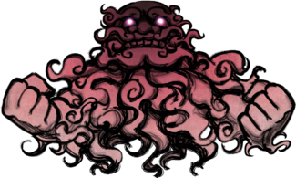
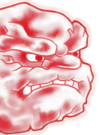

- Welcome to Touhou Wiki!
- Please register to edit. For assistance, check in with our Discord server or IRC channel.
Unzan
Unzan ɯ̃ᵝnzã̠ɴ (♫) | |
|---|---|
|
 Sprite of Unzan in Hopeless Masquerade The Big Wheel, Having Guarded and Been Guarded More Character Titles | |
| Species |
Enlightened spirit, Nyuudou |
| Abilities |
Changing shape and size at will |
| Location | |
Music Themes | |
| |
Appearances | |
| Official Games | |
| |
| Print Works | |
| |
Unzan (雲山) is an old nyuudou, whose gender is male, controlled by Ichirin Kumoi. Being a cloud spirit, Unzan's true form is a mystery. Along with Ichirin, he guards the Palanquin Ship of his own accord in order to assist in the revival of Byakuren Hijiri.
General Information[edit]
Unzan, along with Ichirin Kumoi, first appeared as the Third stage boss of Undefined Fantastic Object and later both as a playable character of Hopeless Masquerade. As part of a team with Ichirin, they work together to face their challenges.
Personality[edit]
Unzan is a shy, but overbearing nyuudou who'll only talk to Ichirin Kumoi. However, when he really is angry, he'll thunder out.[1] Unzan is quiet and stubborn, with a strong sense of duty. While once feared, together with Ichirin, they rarely attack anyone.
Ability[edit]
- Changing shape and size at will
He is able to make his fists giant and strike the opponent and shoot unique danmaku. He can multiply, expand, and change form as he wishes, as shown in his Rage "First and Last of Its Kind Scolding Scorch" spell card. He cannot outright transform into a different being, however.
Backstory[edit]
His (and Ichirin's) Symposium of Post-mysticism article gives him the following backstory:
Unzan once was a normal man-eating foreseeing nyuudou. Ichirin, who then was a human girl, dauntlessly went to encounter him and give him a scare when she first heard of him. When she finally saw what looked like the feet of a monk, taking care not to raise her head, she shouted "The foreseeing nyuudou was foreseen!", a repelling spell.[2] While that would normally be enough to make a nyuudou disappear, the sheer shock of his utter defeat and resulting admiration for the courageous girl prompted Unzan to devote the rest of his life to protecting her.
By the time of Undefined Fantastic Object, Ichirin and Unzan have both joined Byakuren Hijiri due to her acceptance of youkai as well as her understanding of the human heart.
Background Information[edit]
Origin[edit]
A possible source of inspiration for the Unzan and Ichirin character is an old Japanese tale about tsukumogami (youkai born from an old object attaining a spirit of its own after being around for 100 years). This story features a tsukumogami born from a Buddhist rosary called Ichiren Nyuudou.
Name[edit]
His name is Unzan (雲山), which means "Clouded Mountain" or "Mountain of Clouds". A nyuudou cloud (入道雲) is a Japanese term for cumulonimbus cloud or thunderhead. Unzan being purple is a reference to the purple cloud leading to where Myouren was.
Design[edit]
The sprite of Unzan in Undefined Fantastic Object and Hopeless Masquerade shows that he is a pink/reddish cloud with the face of an old man with a beard. Due to his ability, he's shown to have multiple fists and heads.
Unzan's Appearances[edit]
- Undefined Fantastic Object
- Main article: Undefined Fantastic Object Story
Unzan stands guard with Ichirin at the Palanquin Ship in order to keep those who would prevent Byakuren Hijiri's revival away. During their battle with the heroine, he uses his fists as projectiles to try and defeat the heroine.
Relationships[edit]
The Wheel That Guards, Unzan's life is devoted to watching over Ichirin, his partner and handler. Since he is very shy, he talks quietly and only to her, causing her to be his spokeswoman of sorts.
- Koishi Komeiji
Unzan is revealed to be able to notice Koishi Komeiji before Ichirin does, and apparently gets along well enough to have Koishi call him "Uncle Nyuudo".[3]
Spell Cards[edit]
| Name | Translated | Comments | Games | Stage | ||
|---|---|---|---|---|---|---|
| Total: 29 | ||||||
| 鉄拳「問答無用の妖怪拳」 | Iron Fist "An Unarguable Youkai Punch" | UFO | St. 3: E/N | |||
| 神拳「雲上地獄突き」 | Divine Fist "Hell Thrust from Above the Clouds" | UFO | St. 3: H | |||
| 神拳「天海地獄突き」 | Divine Fist "Hell Thrust from the Heavenly Seas" | UFO | St. 3: L | |||
| 拳符「天網サンドバッグ」 | Fist Sign "Heavenly Net Sandbag" | UFO | St. 3: E/N | |||
| 連打「雲界クラーケン殴り」 | Barrage "Cloud World Kraken Strike" | UFO | St. 3: H | |||
| 連打「キングクラーケン殴り」 | Barrage "King Kraken Strike" | UFO | St. 3: L | |||
| 拳打「げんこつスマッシュ」 | Hand Strike "Fist Smash" | UFO | St. 3: E/N | |||
| 潰滅「天上天下連続フック」 | Annihilation "Consecutive Hooks Throughout Heaven and Earth" | UFO | St. 3: H/L | |||
| 大喝「時代親父大目玉」 | Thunderous Yell "A Scolding from a Traditional Old Man" | UFO | St. 3: E/N | |||
| 忿怒「天変大目玉焼き」 | Rage "Calamity Scolding Scorch" | UFO | St. 3: H | |||
| 忿怒「空前絶後大目玉焼き」 | Rage "First and Last of Its Kind Scolding Scorch" | UFO | St. 3: L | |||
| 拳骨「天空鉄槌落とし」 | Fist "Falling Sky Hammer" | DS | St. 5 | |||
| 稲妻「帯電入道」 | Lightning "Electrified Nyuudou" | DS | St. 5 | |||
| 鉄拳「入道にょき」 | Iron Fist "Nyuudou Nyoki" | DS | St. 5 | |||
| 嵐符「仏罰の野分雲」 | Storm Sign "Autumn Storm Clouds of Buddhist Retribution" | HM ULiL AoCF |
Use Use Use | |||
| 積乱「見越し入道雲」 | Cumulonimbus "Foreseeing Nyuudou Cloud" | HM ULiL AoCF |
Use Use Use | |||
| 拳固「懺悔の殺風」 | Clenched Fist "Deadly Wind of Penitence" | HM ULiL AoCF |
Use Use Use | |||
| 「華麗なる親父時代」 | "Traditional Era of a Splendid Old Man" | HM | Use-LW | |||
| 拳符「怒りの大雲塊」 | Fist Sign "Great Cumulus of Rage" | HM | Story | |||
| 入道「夏の幻想太郎」 | Nyuudou "Genso-Tarou Cloud in Summer" | HM | Story | |||
| ＊２６５センチの魔人現る！＊ | *A 265-Centimeter Fiend Appears!* | ULiL AoCF |
Use-LW Use-LW | |||
| 悪符「八尺のオカルト柱」 | Evil Sign "Eight-Shaku Occult Pillar" | ULiL | Story | |||
| ＊謎の女に囚われた真夏の夜＊ | *A Midsummer Night Trapped by a Mysterious Woman* | ULiL | Story | |||
| 拳風符「入道叢雲風水拳」 | Fist Wind Sign "Nyuudou Murakumo Feng Shui Fist" | Co-owner with Futo | AoCF | Story | ||
| 拳星符「入道叢雲スレイブスパーク」 | Fist Star Sign "Nyuudou Murakumo Slave Spark" | Co-owner with Marisa | AoCF | Story | ||
| 撃拳符「スカンダの怪雲拳」 | Strike Fist Sign "Skanda's Strange Cloud Fist" | Co-owner with Byakuren | AoCF | Story | ||
| 恋拳符「ローズカプリチオ怪雲拳」 | Love Fist Sign "Rose Capriccio Strange Cloud Fist" | Co-owner with Koishi | AoCF | Story | ||
| 光拳符「インドラのヴァジュラ怪雲拳」 | Light Fist Sign "Indra's Vajra Strange Cloud Fist" | Co-owner with Byakuren | AoCF | Story | ||
| 拳水符「入道叢雲ミズバク拳」 | Fist Water Sign "Nyuudou Murakumo Water Bomb Fist" | Co-owner with Nitori | AoCF | Story | ||
Additional Information[edit]
- Essentially, Unzan is the Stage 3 boss in Undefined Fantastic Object and not Ichirin; Ichirin herself came as a way to have an actual character on the screen to shoot at.[1]
- Unzan is the first male character to appear in a Windows game.
- Unzan is (may be) the first male character in the Touhou Project to have become a playable character – in Hopeless Masquerade.
Fandom[edit]
Official Profiles[edit]
|  | ○３面ボス 守り守られし大輪
[...] 雲山（うんざん） 種族：入道 [...] 雲山は、雲で出来た入道である。 [...] |
Stage 3 boss The Great Wheel, Having Guarded and Been Guarded
[...]
Race: Nyuudou [...] Unzan is a nyuudou made of clouds. [...] |
Official Sources[edit]
- 2009/03/08 Undefined Fantastic Object Demo - Stage 3 dialogue; Omake.txt (pre-official profile)
- 2009/08/15 Undefined Fantastic Object - Stage 3 dialogue; Settings and Extra Story.txt (official profile)
- 2010/03/14 Double Spoiler - Stage 5 spell card comments
- 2010/12/25 Oriental Sacred Place - Chapter 12
- 2012/04/27 Symposium of Post-mysticism - Ichirin Kumoi & Unzan Profile
References[edit]
- ↑ 1.0 1.1 Chara☆Mel. "Interview with Chara☆Mel" (in 日本語). Unknown parameter
|accesdate=ignored (|access-date=suggested) (help) - ↑ Foreseeing nyuudou are youkai monks who only show their feet at first. When their victim would look up to see their face, they would grow larger so that their heads would remain out of sight. It's been said that when the victim looks straight up, their head would get chopped off.
- ↑ in Ichirin's story mode in Hopeless Masquerade
| This page is part of Project Characters, a Touhou Wiki project that aims to write proper descriptions for all official characters of Touhou Project. Please keep the character page guidelines in mind when contributing. |
- Pages with citations using unsupported parameters
- Undefined Fantastic Object
- Double Spoiler
- Hopeless Masquerade
- Urban Legend in Limbo
- Antinomy of Common Flowers
- Characters
- Characters in Undefined Fantastic Object
- Males
- Characters in Hopeless Masquerade
- Characters in Antinomy of Common Flowers
- Non-humanoid Characters